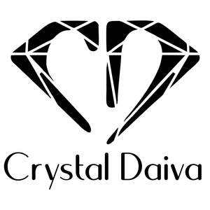

Trade Mark Journal No.2025/033 15 August 2025
UK00004243415 2 August 2025 (3,14,35)

- Class 3
- Perfume; Perfumes; Perfume oils; Perfumery and fragrances; Fragrances; Oils for perfumes and scents; Musk [perfumery]; Cologne; Perfume water; Aromatics for perfumes; Room perfume sprays; Liquid perfumes; Colognes; Scents; Fragrance emitting wicks for room fragrance; Perfumery; Aromatics for fragrances; Cedarwood perfumery; Extracts of perfumes; Eau de cologne [cologne water]; Body deodorants [perfumery]; Deodorants for personal use [perfumery]; Body fragrances; Perfumeries; Perfume oils for the manufacture of cosmetic preparations; Fragrances for automobiles; Vanilla perfumery; Household fragrances; Room perfumes in spray form; Perfumed sachets; Natural oils for perfumes; Room fragrances; Perfumery products; Feminine deodorant sprays; Perfumed soaps; Cologne water; Scented water for fragrancing; Perfumed soap; Perfuming sachets; Air fragrance preparations; Scented oils; Scented linen sprays; Synthetic perfumery; Air fragrance reed diffusers; Scented sachets; Scented body lotions; Scented soaps; Perfumed creams; Incense spray; Scented body spray; Eau de Cologne; Eau de cologne; Essential oils as perfume for laundry purposes; Sachets for perfuming linen; Linen (Sachets for perfuming -); Eau de colognes; Ethereal oils for fragrancing; Scented room sprays; Perfumed lotions [toilet preparations]; Fragrance for household purposes; Eaux de Cologne; Eaux de cologne; Scented body lotions and creams; Skin fresheners [cosmetics]; Scented fabric refresher sprays; Perfumed body lotions [toilet preparations]; Soap (Deodorant -); Fragrant sachets; Incense sachets; Agarwood [incense]; Roll-on deodorants [toiletries]; Natural perfumery; Perfumed water; Eau de parfum.
- Class 14
- Jewellery; Necklaces [jewellery]; Brooches [jewellery]; Jewellery brooches; Jewellery, including imitation jewellery and plastic jewellery; Pendants [jewellery]; Bracelets [jewellery]; Brooches [jewellery, jewelry (Am.)]; Ornaments [jewellery]; Amulets being jewellery; Amulets [jewellery]; Pearls [jewellery]; Trinkets [jewellery]; Necklaces [jewellery, jewelry (Am.)]; Jewelry; Fashion jewellery; Lockets [jewellery]; Gold jewellery; Brooches [jewelry]; Jewelry brooches; Brooches being jewelry; Jade [jewellery]; Clasps for jewellery; Charms [jewellery]; Charms for jewellery; Jewellery charms; Enamelled jewellery; Costume jewellery; Pearls [jewellery, jewelry (Am.)]; Ornaments [jewellery, jewelry (Am.)]; Items of jewellery; Jewellery items; Decorative brooches [jewellery]; Trinkets [jewellery, jewelry (Am.)]; Rings being jewellery; Rings [jewellery]; Amulets [jewellery, jewelry (Am.)]; Bracelets [jewellery, jewelry (Am.)]; Pewter jewellery; Jewellery stones; Wristlets [jewellery]; Charms [jewellery, jewelry (Am.)]; Lockets [jewellery, jewelry (Am.)]; Chains [jewellery, jewelry (Am.)]; Jewellery products; Rings [jewellery, jewelry (Am.)]; Shoe jewellery; Precious jewellery; Necklaces [jewelry]; Pins [jewellery, jewelry (Am.)]; Jewellery chains; Chains [jewellery]; Jewellery chain; Jewellery in semi-precious metals; Paste jewellery [costume jewelry [Am.]]; Paste jewellery [costume jewelry (Am.)]; Gold plated brooches [jewellery]; Pins [jewellery]; Pins being jewellery; Jewellery boxes; Amber pendants being jewellery; Jewellery for personal adornment; Pendants [jewelry]; Imitation jewellery; Cabochons for making jewellery; Jewellery chain of precious metal for necklaces; Amberoid pendants being jewellery; Body jewellery; Beads for making jewellery; Gold thread [jewellery, jewelry (Am.)]; Jewellery incorporating diamonds; Personal jewellery; Silver thread [jewellery, jewelry (Am.)]; Jewellery in non-precious metals; Imitation jewellery ornaments; Hat jewellery; Facial jewellery; Clips of silver [jewellery]; Sterling silver jewellery; Jewellery in the form of beads; Bracelets [jewelry]; Jewellery incorporating pearls; Pearls [jewelry]; Amulets [jewelry]; Jewellery articles; Articles of jewellery; Jewellery made from gold; Jewellery made from silver; Diamond jewelry; Jewellery chain of precious metal for anklets; Jewellery containing gold; Lockets [jewelry]; Clasps for jewelry; Jewellery chain of precious metal for bracelets; Jewelry stickpins; Jewellery in precious metals; Jewellery of precious metals; Artificial jewellery; Jewellery cases; Jewellery for personal wear; Jewellery fashioned from non-precious metals; Charms [jewelry]; Jewelry charms; Charms for jewelry; Jewellery rope chain for necklaces; Body costume jewellery; Jewellery fashioned of semi-precious stones.
- Class 35
- Online retail store services relating to cosmetic and beauty products; Online retail services relating to jewelry; Online retail services relating to cosmetics; Retail services relating to jewelry.
Daiva Ahmad Kersyte